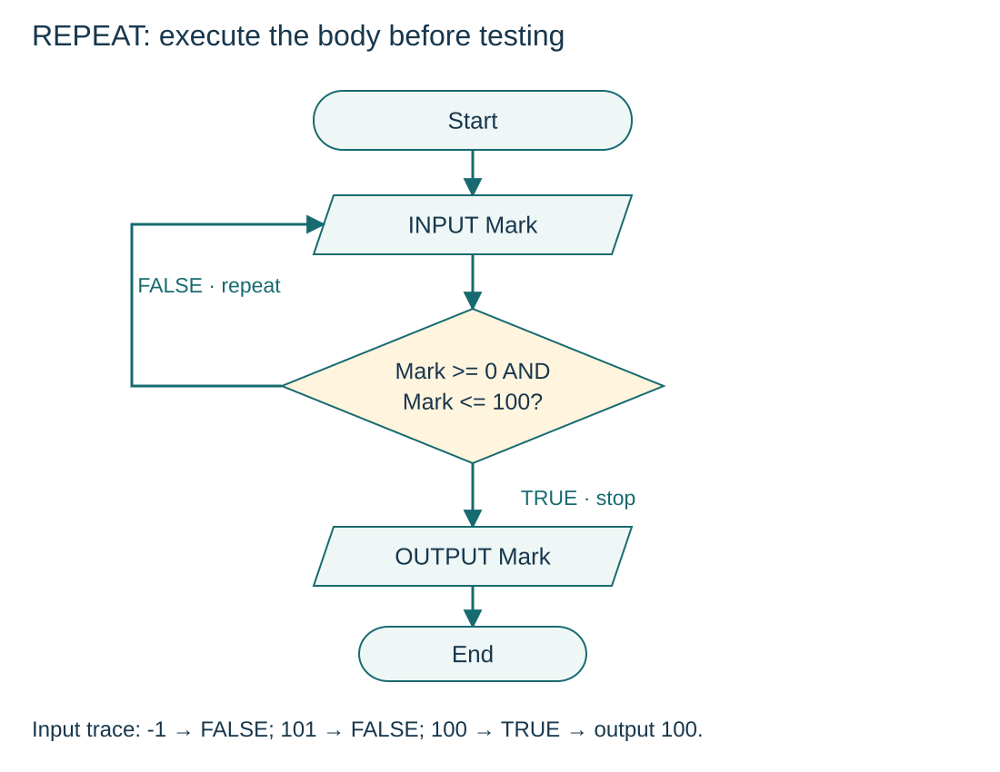

Use a post-condition REPEAT loop
S11.04.A05
Visual overview
REPEAT: execute the body before testing

Visual transcript
- INPUT Mark runs before the first UNTIL test, so at least one input is read.
- The condition is (Mark >= 0) AND (Mark <= 100). TRUE exits; FALSE returns to INPUT Mark.
- For inputs -1, 101, 100, the outcomes are FALSE, FALSE, TRUE. The final output is 100.
Core explanation
A post-condition loop executes its body before testing, so the body runs at least once.
Read the REPEAT rules
- Syntax: Write REPEAT, the body, then UNTIL Condition. There is no ENDREPEAT.
- TRUE: Stop and continue after the loop.
- FALSE: Return to the body for another iteration.
Apply the rule to validation
Read Mark inside the body and accept it when (Mark >= 0) AND (Mark <= 100). An invalid integer triggers another input. This example assumes integer input: the range test does not itself handle text instead of a number.
Worked example · Read a mark in the inclusive range
- Pseudocode
DECLARE Mark : INTEGER REPEAT INPUT Mark UNTIL (Mark >= 0) AND (Mark <= 100) OUTPUT Mark - Trace and check
Inputs -1, 101, 100 lead to three reads and output 100. Input 0 is accepted on the first attempt.